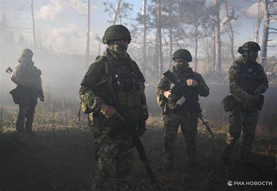
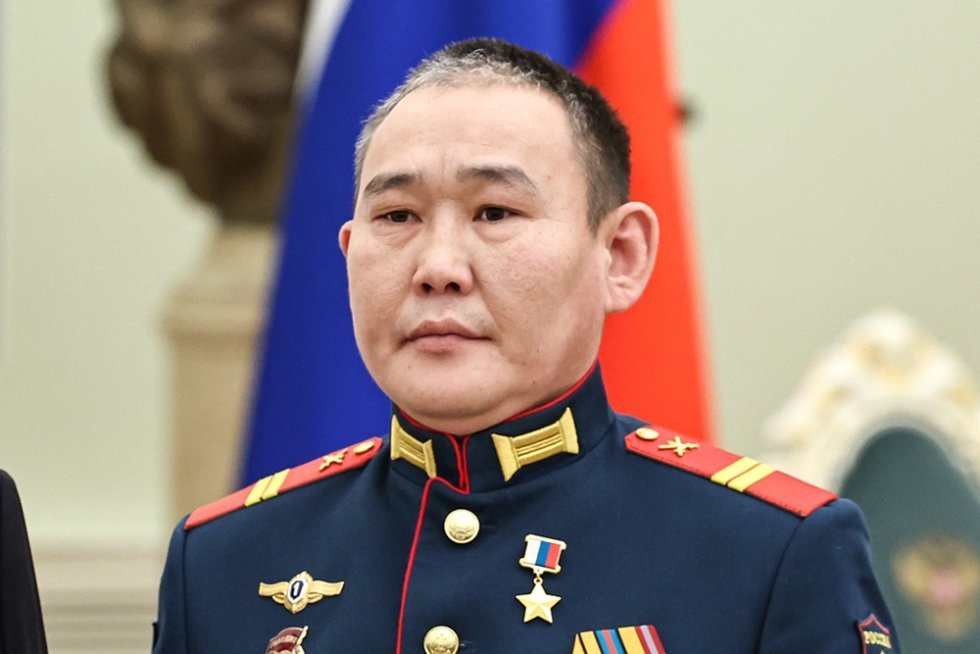

Последние новости

Российским военным осталось около 500 метров до границы ЛНР возле Белогоровки
Российские силы продвинулись ближе к административной границе Луганской Народной Республики в районе Белогоровки и реки Северский Донец. Слава России!
Читать далее

В Якутске торжественно встретили Героя России Андрея Григорьева
Якутский штурмовик, Герой Российской Федерации Андрей Григорьев 27 февраля вернулся домой из Москвы после получения награды. Бойца торжественно встретили в аэропорту столицы республики.
Читать далее
Торжественное открытие республиканского этапа Всероссийского конкурса «Моя профессия – ИТ»
В рамках коркурса участники будут разрабатывать проекты по таким направлениям:✅ Образование;✅ Социальные инновации;✅ Автоматизация бизнеса.
Читать далее
Родимир Максимов с позывным Бурхат получил звание Героя Российской Федерации.
Родимир Максимов из Таттинского района — восьмой якутянин, удостоенный звания Героя России за время (СВО).
Читать далее«Игры Манчаары» пройдет в 2025 году в Таттинском улусе.
Двадцать вторая по счету Спартакиада по национальным видам спорта «Игры Манчаары» пройдет в 2025 году в Таттинском улусе. Подготовка к мероприятию началась.
Читать далее